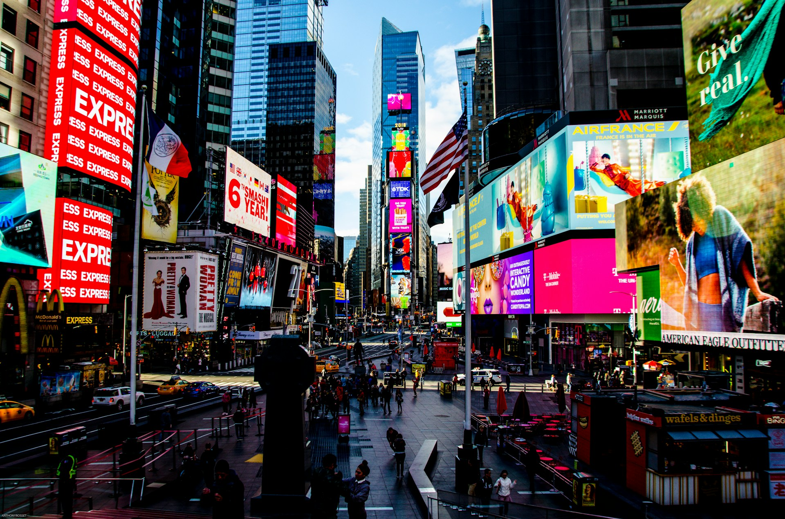

New York City
City Overview
New York City, often referred to as the "Big Apple" or simply "NYC," is a vibrant metropolis established in 1667 bursting with energy, diversity, and endless possibilities. Situated on the northeastern coast of the United States, NYC is composed of five boroughs: Manhattan, Brooklyn, Queens, the Bronx, and Staten Island. Each borough offers its own unique flavor, contributing to the city's rich tapestry of cultures, languages, and traditions. Among this metropolis is a population exceeding 8.8 million people. At its core lies Manhattan, a bustling island that serves as the city's economic and cultural epicenter. Meanwhile, Brooklyn, with over 2.7 million residents, offers a diverse array of neighborhoods and artistic enclaves. Queens, the most ethnically diverse borough, boasts a population of nearly 2.4 million people and is renowned for its culinary delights and cultural festivals. The Bronx, home to approximately 1.4 million residents, is celebrated for its rich cultural heritage and iconic landmarks. Staten Island, with a population of over 480,000, charms visitors with its scenic parks and historic attractions. Together, these boroughs form a vibrant mosaic that embodies the spirit of New York City, where the energy of its diverse population fuels endless possibilities and opportunities.
(Source: Wikipedia)Region and Classification
New York City, located in the northeastern region of the United States alongside the Atlantic Ocean's coastline, is classified as an urban city to its significant influence on finance, commerce, culture, and media. As the largest city in the country, it serves as a major economic hub, attracting businesses and individuals from around the world. Situated along the coast, the city's strategic location has historically made it a vital center for trade and transportation, further enhancing its global stature. From the iconic skyline of Manhattan to the vibrant neighborhoods of Brooklyn, New York City's dynamic blend of cultures, opportunities, and attractions continues to captivate visitors and residents alike, solidifying its status as one of the world's premier urban destinations.
(Source: New York City Website)Average Income and Economy
The median income in New York City is notably diverse and varies across its boroughs, reflecting the city's multifaceted economy. In 2023, the median household income in New York City was $76,607, with variations based on factors such as location, industry, and occupation. The city's economy is driven by a diverse range of sectors including finance, technology, media, tourism, healthcare, and education. Wall Street, situated in Manhattan's Financial District, is a prominent symbol of NYC's financial prowess, while Silicon Alley in Lower Manhattan and tech hubs in Brooklyn contribute to the city's innovation and technological advancement. Additionally, tourism plays a significant role, with iconic attractions like Times Square, Central Park, and Broadway generating billions of dollars annually. The city's vibrant cultural scene, world-class universities, and renowned medical institutions further bolster its economic vitality, making New York City a global powerhouse of opportunity and prosperity.
(Source: US Census)